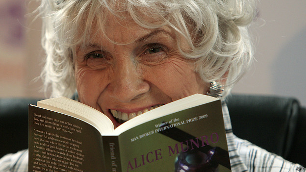
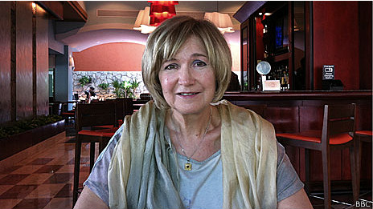
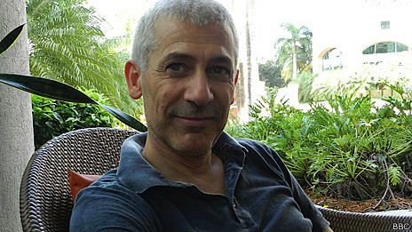
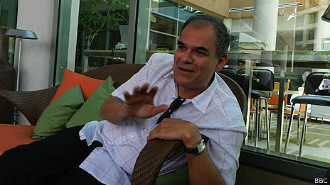

Natalia Guerrero.
BBC Mundo, San Juan de Puerto Rico.
(Giovedì, 10 Ottobre di 2013)

Alice Munro es una autora de cuentos cortos.La jornada inaugural del Festival de La Palabra en San Juan de Puerto Rico fue justo la víspera del anuncio del premio Nobel de Literatura.
Era lógico que los asistentes al evento literario más importante de la “Isla del encanto” se preguntaran quién iba a recibir el máximo premio a las letras. Muchas especulaciones y hasta alguna “apuesta” hubo entre escritores y conocedores.
En el Teatro Tapia en el Viejo San Juan sonaron algunos candidatos ya naturales, como el del japonés Haruki Murakami, seguido por los estadounidenses Cormac McCarthy y el eterno candidato, como ya le dicen algunos a Philip Roth.
Hubo quien habló del israelí Amos Oz y hasta del brasileño Rubem Fonseca. Algunos nombres se repitieron en varias ocasiones.
En cambio, el de la canadiense Alice Munro sonó tímidamente tan solo un par de veces. Aunque no porque no estuviera en el radar como potencial merecedora del galardón.
De hecho, el jueves, los asistentes al Festival recibieron jubilosos la noticia que llegada desde la Academia de Suecia anunciando que Munro había obtenido la distinción por su “maestría en las historias cortas contemporáneas”.
Algunos de los que apostaron y especularon la noche del miércoles en San Juan compartieron con BBC Mundo sus impresiones sobre el Nobel de Alice Munro.
“El cuento no es un género menor”
Lidia Jorge, escritora portuguesa

El premio Nobel es un imposible porque siempre hay por lo menos 20 escritores alrededor del mundo que lo merecen, pero este no fue una sorpresa porque todos los años se hablaba de Alice Munro.
Hay otros nombres que lo merecen también como el portugués Antonio Lobo Antunes, Milán Kundera, que es una injusticia que no tenga ese premio, o Elena Poniatowska. Pero hoy es el día de Munro y estoy muy contenta por ella.
Munro es una escritora capaz de hacer una alianza entre su pasado personal y el ser humano global de una forma extraordinaria. Es capaz de hablar del viaje de la gente a través del mundo.
Su libro La vista desde Castle Rock es un libro admirable. Todo lo que cuenta alrededor de su familia y alrededor de su pasado es extraordinario. Después de leerlo queda la idea de una historia mágica a través de la nieve en el que el destino humano va y viene.
Alice Munro es para mí una escritora magnífica porque su batalla interior es una batalla sin grandes temblores. No hace ruido, habla calmada, nos habla en silencio, ella es la esencia de la literatura. Es una palabra silenciosa.
El cuento es un género mayor, no es un género menor y con este reconocimiento, el Nobel está premiando también a la poesía, reconoce un género que es muy importante hoy por su brevedad por su poesía, por su capacidad de adaptarse al mundo contemporáneo.
El Nobel es muy masculino pero en los últimos años ha habido una tendencia para reconocer a las mujeres como con Herta Müller y Doris Lessing, es una tendencia para requilibrar las cosas y comprender que la mujer creadora es tan importante como el hombre de hoy en día.
Nuestra historia es corta, simplemente es que hasta el siglo XX nosotras aprendimos a escribir nuestras vidas, nosotros venimos de cerca, los hombres vienen en cambio de lejos, pero en el futuro habrá equilibrio.
El machismo del mundo literario
Daniel Alarcón, escritor peruano-estadounidense.
Es un premio totalmente merecido. Alice Munro es una gran cuentista, una narradora con mucha agudez y mucha visión. Observa muy bien. Escribe una prosa limpia y bella.
Tiene muchos cuentos que tú crees que sabes a dónde van pero te termina sorprendiendo porque coge por otro camino.
Es una escritora muy querida y muy respetada desde hace mucho tiempo.
No creo que haya compensación de género en este premio. Creo que hay más bien un problema de género en la literatura y el problema es que los hombres son machistas y la novela “importante” es muy masculina. Es un problema que es tan obvio que no hay que conversarlo demasiado.
Recuerdo una vez en Perú que me invitaron a un evento de literatura y había sólo tres mujeres invitadas a participar. Las pusieron juntas en una mesa de literatura erótica. Eso me da una vergüenza ajena terrible.
Pero el premio Nobel ya es otro nivel y nadie puede discutir la calidad literaria de Alice Munro.
Hay un cuento de Munro del que no recuerdo el nombre, que es apartemente tan simple y natural, y al final termina con una escena de una mujer con la cabeza decapitada de un hombre. Ese cuento me chocó mucho.
Siempre tiene esas escenas sorprendentes.
Un mundo de pequeñas pinceladas

José Ovejero, escritor español.
Aunque suene un poco embarazoso, anoche estaba cenando y aposté por Alice Munro, pero no sólo aposté por ella sino que dije que me gustaría que se ganara el Nobel.
Si me hubieran preguntado quién podría ganar hubiera dicho Philip Roth sobre todo con el anuncio de que dejó de escribir, que es un candidato eterno, pero quería que fuera Munro.
Nadie suele apostar por una mujer porque las estadísticas van en contra de que gane una mujer. Los grandes premios son machistas en el sentido de que representan muchísimo más a los hombres que a las mujeres. Pero sobre este premio me parece injusto que se diga que es para compensar, Alice Munro es una escritora magnífica.
Uno nunca sabe por qué el comité del Nobel elige a un determinado autor, no sé si es un premio al cuento, aunque tampoco son tan cortos sus cuentos, por lo menos los que yo he leído.
Lo que pasa es que está muy bien que por una vez el premiado no sea un novelista, aunque a veces también hay dramaturgos y poetas.
Yo recuerdo muy concretamente su libro Demasiada felicidad. El libro entero me parece un prodigio.
A mí me dejó fascinado completamente, sobre todo por la sutileza, por cómo construir un mundo a través de pequeñas pinceladas, de muy pequeños detalles, estudio de carácter, frases que van cayendo casi sin darte cuenta. Qué maravilla.
Kafka, Chéjov, Borges… y Munro

Carlos Cortés, escritor y periodista costarricense.
Me parece fabuloso. Yo descubrí a Alice Munro hace algunos años. Me parece que ha habido una coincidencia crítica entre escritores y principalmente entre lectores de que es una cuentista fabulosa.
Me gusta como lector muchísimo el cuento. Si uno parte en dos la tradición del cuento en el siglo XX pues quedaría entre Kafka y Borges y Chéjov y Munro. Me gusta esta línea de pequeños seres que cuentan cosas ordinarias y que terminan siendo extraordinarios, y creo que ella lo hace notablemente bien.
Los libros Demasiada felicidad y Odio, Amistad, Noviazgo, Amor, Matrimonio tienen cuentos extraordinarios, son memorables, se te quedan en la mente.
Con este Nobel se está premiando un universo literario. Sé que en ciertos países, particularmente en Iberoamérica por ejemplo, el relato breve, el cuento, no anda muy bien editorialmente.
Hay una queja permanente, como una tensión entre las librerías, los editores, los escritores porque el cuento no circula muy bien.
Pero en el mundo anglosajón eso es complemente distinto. En Europa también hay países en los que sea lee mucho el cuento.
Me parece que más que con el género el premio tiene que ver con la manera en Munro construye un mundo de la intimidad, poblado por pequeñas historias entretejidas a partir de muy pocos elementos.
Es admirable como un buen escritor no necesita contarte una epopeya para contarte el mundo y meterte dentro de él. Son cuentos conmovedores.
Un premio a las escritoras
Santiago Gamboa, escritor colombiano.
Me parece que es un premio al género del cuento corto pero también está bien que haya escritoras.
Las mismas candidaturas son masculinas, si miras por cada mujer hay 10 hombres. Pero también es que este es un mundo construido con equidad de género.
En cada país, por cada escritor hay muchos mas hombres que mujeres.
Una vez en París invitaron a escritores 12 colombianos y sólo invitaron a una mujer, que no pudo ir.
Pero no era una cosa de género es que eran los escritores que estaban traducidos al francés. Al respecto habría que hablar con los editores.
Si uno tuviera que escoger cinco escritoras colombianas por ejemplo, no hay ninguna mujer que tenga una obra como la de Alice Munro.
Fonte: BBC
http://www.bbc.co.uk/mundo/noticias/2013/10/131008_literatura_premio_nobel_reacciones_munro_cch.shtml#page-top